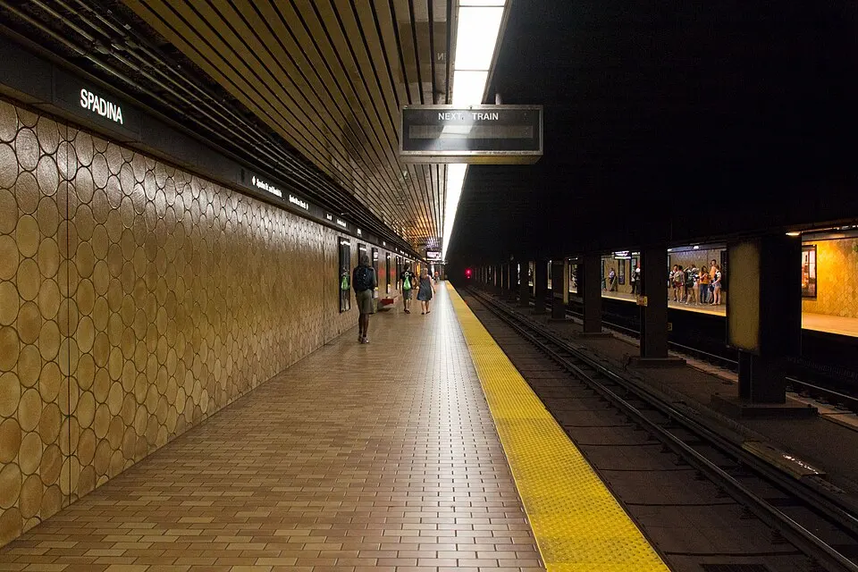

Signal
SignalStation atlas / Spadina
Station history
Spadina


Station history
The Bloor-Danforth subway introduced passenger service at Spadina Avenue.
The new Spadina line platforms opened near Lowther Avenue. A moving walkway through a long passage connected them to the existing station.
Streetcar service returned to Spadina Avenue with a new underground loop at the station.
The TTC removed the moving walkway after maintenance problems. Riders continued to use the connecting passage on foot.